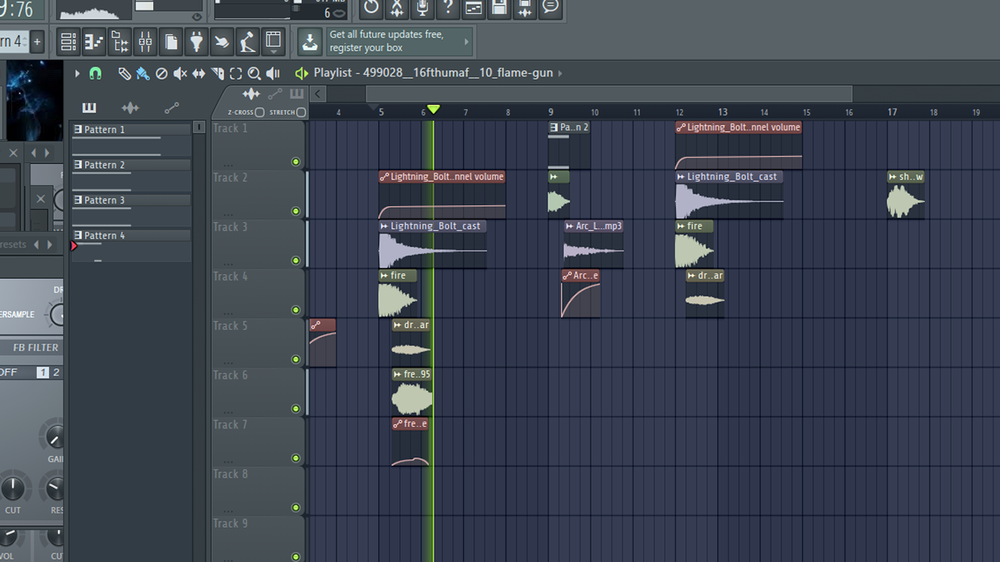
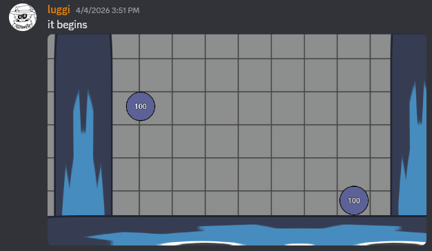

OCBallLab
ROLES
Programmer, Artist, Sound Designer, Character Designer
Takeaways
- Learned how to navigate Godot's workspace and how to program in gdscript.
- Understood the importance of working towards game feel for the player/viewer's experience.
- Learned the basics of balancing a character through making sure it's exciting/interesting to watch while not being too strong.
Project Overview
OCBallLab is a physics-based simulation between various characters made by different people. The project was started by Phishtickz, when I first heard about the project I was inspired to try and make my own version before a public build was released. After making a boss battle in the public version, I was invited to join the dev team.
I currently work as a mainly an artist for the project and a programmer whenever needed. For art, I provide alternate skins for Hones depending on the season, while as a coder I mainly assist with minor systems as well as looking for bugs whenever needed.
You can access the public engine build here: OCBallLab on Itch.io
To watch matches you can go to Phishtickz's socials: Twitter and YouTube
My Contributions
Character Creation
Alongside Hones, an official character, I've programmed multiple characters for both myself, and others. Defining their UX and game balance, making sure they feel fun to watch during their matches.
Sound Design

Being able to create a handful of characters, I took the opportunity to create a variety of sound effects for them, enhancing the viewer experience.
Custom Game Modes
Defined custom and unique game modes for the game; this includes the prototype version of the official "Raid Boss" game mode where a team of 4 went against a boss character.
Context
Genre: Simulation & Entertainment
Team Size: 4 Programmers, +Various Artists
Platform: PC (Windows Only)
Development Time: April 2026 - Present
Tools Used: Godot (Game Engine + Programming), Clip Studio Paint (Art), FL Studio (Music, Sound), Audacity (Sound).


The Original Engine
I became aware of OCBallLab around late March, early April 2026, and it was around the time I began learning Godot. I thought it would be a good opportunity to try my hand at programming my own version of the game. At the time, I knew that I needed to program characters having a healthbar, a meterbar and be able to move around and bounce off the stage and other balls.
At first, progress was relatively slow, as I was still wrapping my head around Godot and how to program in gdscript. Though, I was able to get a basic version of character archetypes (unarmed, weapon and gun balls) to use as templates for future characters, and a rough character select screen ready after 11 days.
Hones The Skeleton | Designing my First Character Moveset
After setting up the both the basics of the engine, as well as templates on different character archetypes, I began to create the first character for the ball engine: Hones the Skeleton.
When conceptulizing his moveset, the important thing I had to keep in mind is both making sure he was both: entertaining to watch, but also not hard to follow while watching. Lastly, I had to make sure he wasn't too strong of a character.
To quickly summarize the moveset I decided for him, he consumes a resource to teleport to the opponent, and if he manages to land a backstab, he's rewarded what he used up and then some. When he fills out his meterbar, he can cast a dragon spell that can make him teleport to whoever it hit for 0 cost.
OCBallLab's Public Build
Sometime in early May 2026, Phishstickz released a public build of OCBallLab, allowing me and many others to take a look at how the engine worked.
It took me a while to understand it fully, but it was truly impressive at how much it differed from my own engine. For example, while I had basic versions of characters to use as templates, I didn't think to seperate the scripts, one that handled their physics and one that handled their behaviour. It was truly enlightening to see the different systems Phishstickz put in place and it taught me a lot about how to design a game in Godot.
I shortly afterwards began working on porting over Hones from my original engine to the public build and managed to get him working after about 5 days.
Raid Mode & Being Invited to the Team
Sometime after getting used to coding within the OCBallLab engine, I began coding a custom game mode that I planned on putting in my original ball engine: "Raid Mode", where a team of 3 or 4 players would need to fight a boss character.
After getting basics of the scene set up, I began to work on the boss character, which would be THE ROARING KNIGHT from DELTARUNE by Toby Fox. I would give them 8 moves to use, all of them based on the different moves used in DELTARUNE. After about 4 days of work, I had a working version of them ready to go.
Soon after, a tournament within the community was held, and I offered to showcase Raid Mode with THE ROARING KNIGHT as a pre-show before the grand finals. After the tournament, I was invited to join the dev team from them being impressed by it and have been working on the project ever since.
Conclusion
OCBallLab has been an incredibly wonderful experience for me, letting me meet incredible and talented people, and allowing me to learn a lot about programming in Godot, as well as how to design a game for the player/viewer experience.
It has also served for me to continue practicing art, music, sound and programming. If this project has interested you, I highly recommend checking out Phishtickz's socials to watch matches.